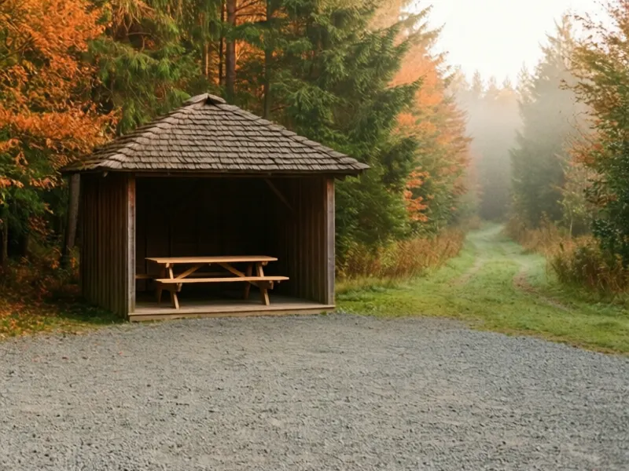

Club de randonnée · Exempleville
Club de randonnée Exemple
Trois randonnées par semaine autour d'Exempleville, pour tous les rythmes. Venez une fois pour essayer : la première sortie est gratuite.

Club de randonnée · Exempleville
Trois randonnées par semaine autour d'Exempleville, pour tous les rythmes. Venez une fois pour essayer : la première sortie est gratuite.
Les trois mêmes sorties chaque semaine, par tous les temps. Pas besoin de s'inscrire.
Dimanche 12 octobre
14 km à travers la hêtraie, et une soupe à l'arrivée.
Samedi 8 novembre
Les outils sont fournis. Membres et voisins bienvenus.
Vendredi 5 décembre
L'année en photos, et le programme de la suivante.
Dimanche 11 janvier
10 km, puis des crêpes à l'abri.
5 à 8 km sur de bons chemins, avec des pauses. Pour une première sortie, ou une sortie tranquille.
10 à 14 km, avec quelques côtes. Le rythme d'une conversation.
18 km et plus, toute la journée, avec un pique-nique.
Des bénévoles, élus chaque année en janvier.
Ada Exemple
Présidente
Grace Exemple
Secrétaire
Ludovic Exemple
Trésorier
Marie Exemple
Guide de randonnée
Chaque sortie part de l'abri au bord du bois, dix minutes avant l'heure.
Rue de l'Exemple 12, 0000 Exempleville, Belgique
Parking gratuit à côté de l'abri.

Elle est gratuite, et personne n'est laissé derrière. Prenez de bonnes chaussures et de quoi boire.